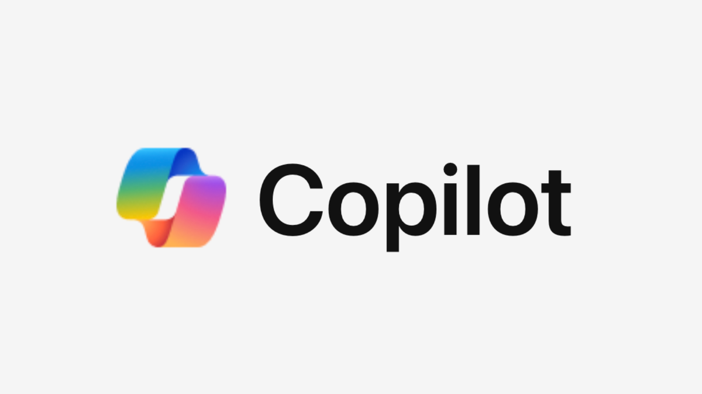
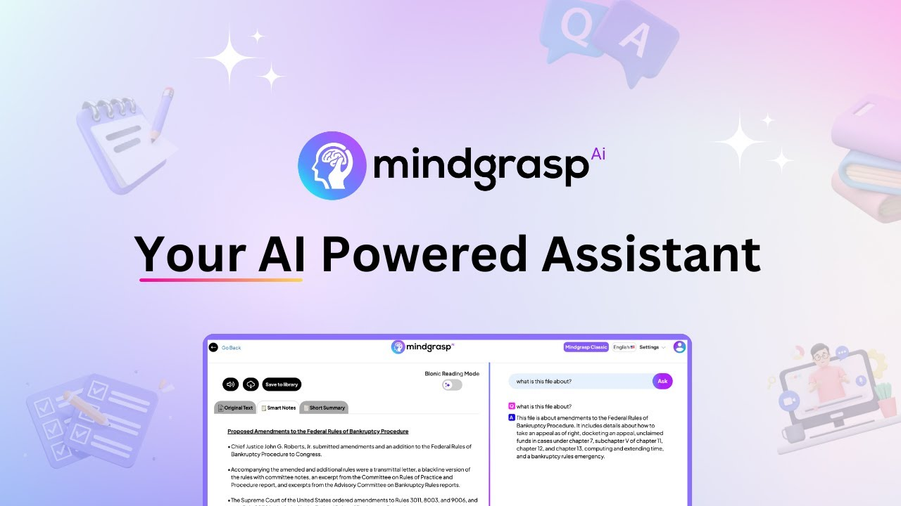

Math Solver es una aplicación que ayuda a resolver problemas de matemáticas.
Presentadores:
Chaves López Valery,
Rodríguez Díaz Karla Paola,
Sánchez Santos Julián
Descripción: Soluciona problemas matemáticos paso a paso de distintos grados de dificultad y funciona como un tutor virtual de matemáticas con material de apoyo práctico y visual.

Presentadores: Aguilar Peña María Fernanda,
Araque Carranza Juan Sebastián,
Enrique Edwin Santiago,
Quintero Angarita Saraí Valentina
Descripción: Realiza mapas mentales y conceptuales, esquemas, diapositivas y líneas de tiempo basadas en documentos o información de la misma IA.
Presentadores: Cediel Remolina David Santiago,
Wandurraga Garnica Gerson Andrés,
Franco Castro Carlos Joseph,
Palacios Chacón Nicolás Andrés
Descripción: Una IA con 50 funciones que permite a los estudiantes aprender contenidos fácilmente y recibir orientación vocacional.
Presentadores: Quintana Guevara Laura Vanessa,
Varela García Brayan Steven,
Murillo Murillo Deysi Dayanna,
Pérez Ortiz Mayra Alejandra
Descripción: Crea notas de texto precisas instantáneamente y permite el diálogo con archivos PDF, videos de YouTube, reuniones de Zoom, grabaciones de seminarios web, etc., creando resúmenes o respondiendo preguntas concretas sobre el texto.
Presentadores: Estupiñan Vargas Félix Orlando,
Porras Carreño Santiago,
Gaviria Tomás Felipe,
Quevedo Aguilar Valentina
Descripción: Los usuarios pueden interactuar seleccionando mensajes escritos previamente o escribiendo sus propias preguntas, con respuestas que incluyen citas clicables que dirigen al contenido de origen pertinente.
Presentadores: García Solano Andrés Felipe,
Arenas Rivera Juan Manuel,
Carvajal Contreras Georgina Sthefannia
Descripción: Realiza presentaciones en diapositivas, genera blogs o páginas web con imágenes desde IA o archivos.
Presentadores: Ribero Amador Karen Liseth,
Olarte Romero Luis Omar,
Ardila Rodríguez Laura Sofía,
Morales Angarita Greidi
Descripción: Potencializa y asesora el estudio de varios idiomas con lecciones fáciles y la posibilidad de adecuar un plan de estudios personalizado.
Presentadores: Ordoñez González German Augusto,
Gualdrón Castellanos Juan Pablo,
Quiñonez Quiñonez Kevin Alejandro,
Rincón Santos Cristian David
Descripción: Crear bots especialistas sobre un tema, chatear con PDFs (preguntar y resumir), y crear contenidos con imágenes para blogs sobre determinados temas.
Presentadores: Meneses Hernández Gabriel,
Garzón Rincón Luisa Fernanda,
Gómez Quintanilla Ángel,
Castellanos Wandurraga Eliana
Descripción: Solucionador de tareas, producción de ensayos, artículos, redacción publicitaria, marketing y más.
Presentadores: Forero Suarez Adrián Felipe,
Urrego Hernández Sara Sofia,
Sandoval Atuesta Víctor Isnardo,
Sierra Rincón Daniel Steven
Descripción: Crear contenido de videos educativos a partir de texto, crear avatares con voz para videos y generar voces y planillas para videos.
Presentadores: Hernández Reyes Sebastián David,
Arenas Díaz Adriana Fernanda,
Araque Pico Luz Angélica,
Remolina Rangel Leydi Julieth
Descripción: Creación de mapas conceptuales o mentales desde PDFs o documentos y resúmenes, permitiendo modificar y presentar los mapas en diapositivas.
Presentadores: Martínez Ramírez María Fernanda,
Suarez Díaz Angie Nathalia,
Ardila Calier Javier Yanni,
Díaz Archila Jhoan Sebastián
Descripción: Diseño de guiones por escenas con personas y efectos especiales, diseño de imágenes para películas, generación de movimiento en imágenes y texto a voz para películas, permitiendo crear películas o cortometrajes.
Presentadores: Uribe Hernández Mayerli, Hernández Katalina,
Ballesteros Judith,
Rodríguez Madeline
Descripción: Herramienta de estudio con múltiples funciones: test, tarjetas de estudio, generador de material, chatbox y proporciona material para profundizar en el aprendizaje de diferentes temas.
Presentadores: Villareal Aparicio Orlando,
Díaz Padilla Andrés Alejandro,
Amaya Merchán Oscar David,
Báez Pineda Wilmer Alonso
Descripción: Interactuar con personajes de IA, personalizarlos y entrenarlos a través de chats.
Presentadores: Ardila Murillo Oscar David,
Colmenares Ramírez Paul Sebastián
, Mendivelso Afanador Diego A.,
Cuevas Rueda Francy Saray
Descripción: Realiza una página web o blog directamente a través de especificaciones dadas por el usuario.
Presentadores: Carreño Pimiento Ruby Carolina,
Fernández Camacho Brayan Yezid,
Díaz Hernández Andrés Santiago,
Granados Valderrama Laura Tatiana
Descripción: Tres chats que a través de WhatsApp permiten interactuar directamente con las IAs solicitando información académica, psicológica, personal, entre otras.
Presentadores: Salamanca Espinosa Cesar Alejandro,
Virviescas Duran Dharma,
Arciniegas Guerrero Edward Santiago,
Rangel Gómez Sara Valentina
Descripción: Asesora y despeja dudas como un docente virtual de diferentes asignaturas, tales como matemáticas e historia, y crea bots y códigos para páginas web.
Presentadores: Jiménez Wandurraga Andrés Felipe,
Rodríguez Díaz Sergio Iván,
Pérez Angulo Maravy,
Delgado Figueroa Naomi Alejandra
Descripción: Responde todo tipo de prompts al estilo ChatGPT, pero actualizado, realizando todo tipo de acciones desde guiones para obras, cartas, tareas complejas, etc., paso a paso.